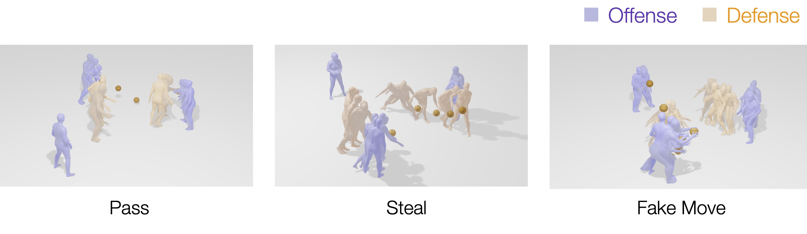
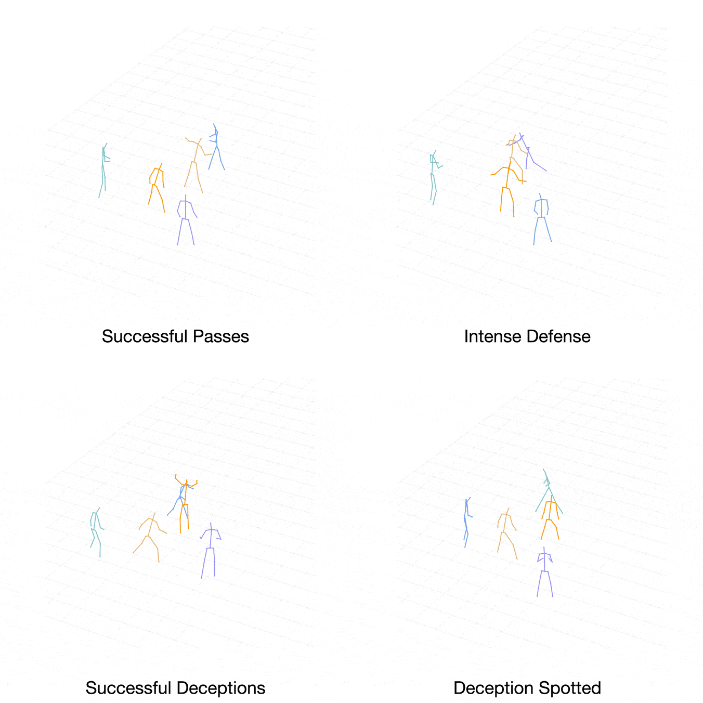

Social Motion Prediction with Cognitive Hierarchies
NeurIPS 2023
Peking University
Abstract
Humans exhibit a remarkable capacity for anticipating the actions of others and planning their own actions accordingly. In this study, we strive to replicate this ability by addressing the social motion prediction problem. We introduce a new benchmark, a novel formulation, and a cognition-inspired framework. We present Wusi, a 3D multi-person motion dataset under the context of team sports, which features intense and strategic human interactions and diverse pose distributions. By reformulating the problem from a multi-agent reinforcement learning perspective, we incorporate behavioral cloning and generative adversarial imitation learning to boost learning efficiency and generalization. Furthermore, we take into account the cognitive aspects of the human social action planning process and develop a cognitive hierarchy framework to predict strategic human social interactions. We conduct comprehensive experiments to validate the effectiveness of our proposed dataset and approach.
Dataset
We capture the no-dribble-3-on-2 basketball drills performed by a team of professional basketball athletes. In each drill, three offensive players possess the ball, while another two players are on defense. The offensive team aims to accomplish as many successful passes as possible within the given time, while the defensive team strives to get steals, deflections, and slow down the offense.
In the following, we denote offensive players using cold colors (purple, cyan and blue), and defensive players using warm colors (orange and brown).

Our dataset features better pose diversity, higher motion intensity and stronger strategic interactions compared to previous datasets as demonstrated in the example motion clips.
Results
Comparison with Ground-Truth
Case 1:
Case 2:
Cognitive Hierarchies
Case 1:
[Level-1] Player Purple passes to Player Blue.
[Level-2] Accordingly, Player Brown generates the stealing action and causes a defense gap between Player Blue and Player Cyan.
[Level-3] Therefore, Player Orange turns around and steps into the middle of player Blue and Player Cyan to fill the gap, which is closer to expert demonstration.
Case 2:
[Level-1] Player Purple makes a reception and a passing move.
[Level-2] Thus, as a defender, Player Brown generates the action to turn to Player Purple. His teammate, Player Orange, is also getting close to Player Purple to defend.
[Level-3] In light of this, Player Orange chooses a different action, turning to Player Cyan. The level-3 actions are also closer to ground truth.
Citation
Template courtesy of Jon Barron.